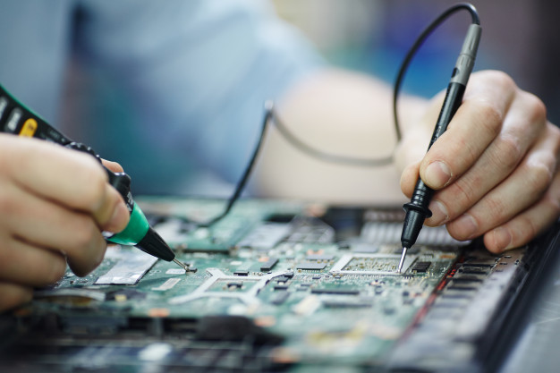
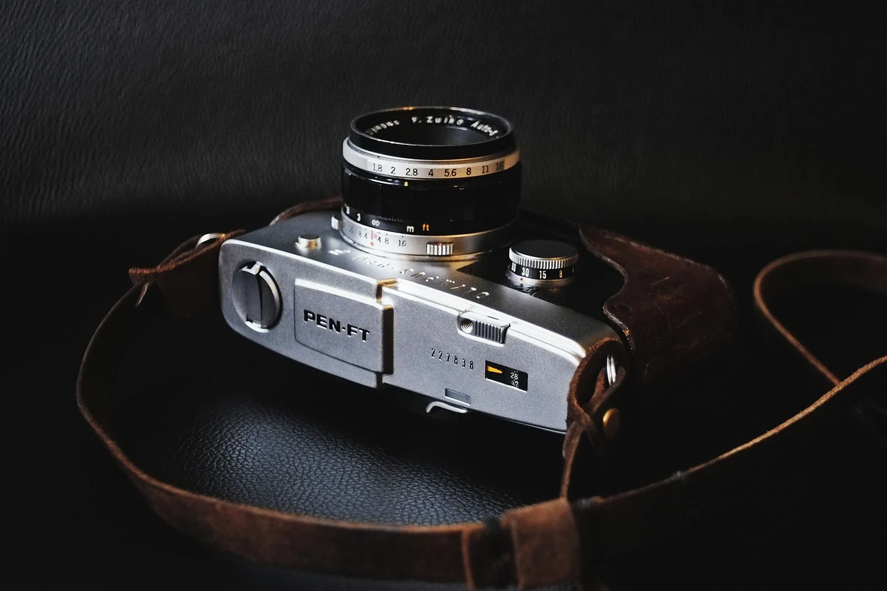

Introduction
Let me introduce myself.There are probably no person in the whole world who would not has hobby.Some people have more then one. Let me tell you what I like to do in my spare time.
My likes are:
- reading books (historical, technical, fiction);
- electronics;
- workout in a gym;
- cycling;
- skiing;
- photography.
Reading books
I spend a lot of my free time reading. I am a very curious person. I love to learn a new stuff.
Electronics
Creating differentelectronic gadgets give me an opportunity to feel myself as a Creator. It is unbelievable feeling. try and you will love it. It also give me chance to fix my broken electronic devices just by myself.

Sport activities
Working out, cycling and skiing help me to keep my body in good physical conditions. These activities relax me after long working hours.
Photography
I love to do photos of a beautiful places, funny situations. Looking through them later brings me back to those valuable moments.

Hobbies make our lives more colorfull, fun, enjoyable.